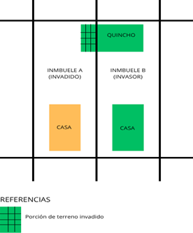
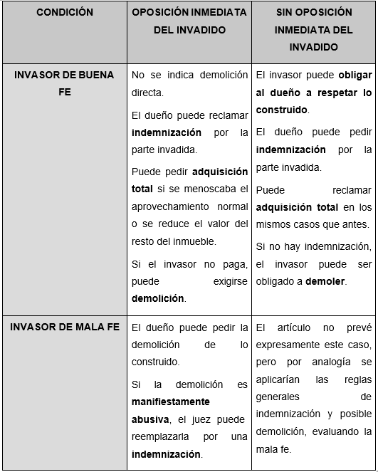

Resumen
El trabajo pretende analizar la figura de la invasión de inmueble colindante regulada por el artículo 1963 del CCyCN, vinculada al principio de buena fe en los derechos reales. Examina las consecuencias jurídicas según la buena o mala fe del edificador y la conducta del propietario afectado, destacando las imprecisiones normativas que dificultan su aplicación. Se propone una reforma legislativa que otorgue mayor coherencia y equilibrio entre el derecho de propiedad y la tutela de la buena fe.
Introducción
El mismo tiene por objeto analizar la figura de la “invasión de inmueble colindante”, incorporada a nuestro ordenamiento con la sanción del Código Civil y Comercial en el año 2015, con la finalidad de subsanar el vacío normativo que existía en dicha materia.
Nos proponemos analizar el conflicto derivado de aquellas construcciones que comienzan a realizarse en terreno propio pero que exceden los límites perimetrales asentando parte de dicha obra sobre el terreno colindante, lo que es propiedad de un tercero. Esta situación, no encontró en nuestro país regulación normativa hasta la sanción del Código Civil y Comercial, donde se incorpora el artículo 1963 la solución legal de la controversia antes expuesta.
La invasión de inmueble colindante está especialmente vinculada con el principio de buena fe, regente en todo el ámbito del derecho y con el principio de “accesión inversa o invertida”, que deroga la regla romana absoluta “superficie solo cedit”, donde otorga calidad de principal a lo edificado y de accesorio al suelo, por lo que este último accede al primero.
Principio de Accesión
La accesión puede tener lugar cuando una cosa mueble se adhiere a un inmueble (ej. una plantación), a otra cosa mueble o cuando la reunión es de dos inmuebles. Se las clasifica en natural o artificial, según intervenga o no la mano del hombre.
Por ende, el propietario de una cosa considerada como principal, adquiere el dominio de aquellas cosas, estimadas accesorias, que se incorporen a ella, uniéndose inseparablemente.
Marco Legal
En el Código Civil y Comercial, la accesión está regulada como uno de los modos de adquisición del dominio y se halla en el Libro Cuarto (“De los Derechos Reales”), Título III (“Dominio”), Capítulo 2 (“Modos especiales de adquisición del dominio”), en las secciones 4° (“Transformación y accesión de cosas muebles”) y 5° (“Accesión de cosas inmuebles”).
De este modo, se pueden distinguir dos tipos de accesión: por un lado, la accesión sobre cosas muebles, y por el otro, la que aquí interesa, la accesión sobre cosas inmuebles. Dentro de esta última categoría se hallan el aluvión (art.1959 CCCN), la avulsión (art.1961 CCCN), la construcción, siembra y plantación (art.1962 CCCN) y la invasión de inmueble colindante (art.1963 CCCN).
Antecedentes Romanos
La expresión latina superficies solo cedit (“la superficie cede ante el suelo”), de origen romano, establece que el propietario del terreno —considerado el elemento principal— adquiere la propiedad de todo aquello que se incorpore a él —lo accesorio—. En virtud de este principio, no se reconocen titularidades jurídicas diferenciadas; es decir, no puede existir, por una parte, un titular del suelo y, por otra, un titular distinto de lo edificado o asentado sobre él. En consecuencia, todo aquello que se encuentra unido físicamente al terreno se considera, asimismo, jurídicamente incorporado al mismo.
El término “accesio” significaba para los romanos una conjunción o relación cualquiera de cosa a cosa, sea una de ellas parte o cosa accesoria, esto es, no ligada formando unidad con la cosa principal (equivale a la pertenencia, desconocida en el Derecho Romano en cuanto a su régimen jurídico). Se incluyen tradicionalmente entre las accesiones algunas hipótesis, como la isla nacida en el río o el lecho de éste abandonado por las aguas, a las cuales tal vez podrían añadirse otras (por ejemplo, el tesoro, la caída de un aerolito, etc.); en ellas la cosa, que se une a la propia, es res nullius; por lo tanto, no se requiere ni que sea realmente accesoria, ni que exista una adhesión exacta y verdadera.
El concepto de accesión es característico para fijar la esencia del dominio romano, ya que sirve para demostrar la atracción material que éste ejerce, sobre todo lo que entra en su recinto soberano, y al mismo tiempo la repulsión a tolerar dentro de su esfera derechos extraños.
Breve evolución del principio “superficies solo cedit”
Finalmente, y retomando el principio superficie solo cedit, este no conservó por siempre sus caracteres de absolutez e inderogabilidad, debido a que su aplicación obligaba a romper la unidad del edificio, resultando antieconómico y dando resultados netamente arbitrarios sumado a la existencia de nuevas prácticas de construcción y también a la influencia de los pueblos orientales, contemporáneos a Roma, los cuales ya admitían desde antiguo la propiedad separada del suelo y de lo superpuesto al mismo, reconociendo diferentes titularidades jurídicas.
En virtud de todo lo expuesto, tanto la jurisprudencia como el ius honorarium atenuaron la aplicación del principio superficies solo cedit, cuya rigidez resultaba anacrónica. Fue en el derecho postclásico donde dicho principio adquirió un carácter relativo, reconociéndose su disponibilidad por las partes y abandonándose, así, sus notas originarias de absolutez e inderogabilidad.
Accesión Inversa
Conforme el Diccionario Panhispánico del Español Jurídico, la accesión inversa es toda “Accesión que atribuye la propiedad de un edificio a su dueño incluyendo la parte del territorio que ha resultado invadida al edificarlo, debiendo aquel indemnizar al propietario del terreno por el valor de la porción de suelo que pierde y el demérito que sufra el resto. Es necesario que quien pretenda su aplicación sea dueño de lo edificado, que parte del edificio se haya levantado en parte del terreno propiedad del edificante y sea un todo de manera que no pueda separarse o dividirse. Es preciso que el valor del edificio sea superior al del terreno invadido, y que el edificante lo sea de buena fe.”
Invasión del inmueble colindante en el CCyC
El Anteproyecto de Bibiloni en 1929, incluyó la regulación de la mencionada figura en su artículo 2393: “Cuando el propietario de un fundo ha construido un edificio en el que, sin dolo negligencia grave de su parte, ha invadido la propiedad vecina, el dueño de ésta debe tolerarlo, a menos que se haya opuesto antes o en el momento en que su límite fue excedido. Será indemnizado el perjudicado, según lo prevenido en el art. 2390 y el terreno ocupado pasará al dominio del que construyó, a menos que éste se allanare a retirar la construcción. Si la parte de la heredad vecina fuera de la construcción resultare insuficiente para una utilización o construcción de explotación normal, o quedase perjudicada, la ya existente, su propietario podrá exigir la adquisición total. Si no se abonase el precio en cualquiera de los casos, podrá ser obligado el constructor a la demolición y la expropiación quedará sin efecto.” Este artículo fue reproducido exactamente en los posteriores proyectos de reforma: en el Proyecto de 1936 (art. 1477) con redacción a cargo de Lafaille y Tobal y años más tarde en el proyecto de 1954 (art. 1510), a cargo de Llambías.
A su vez, el Proyecto de 1998 constituye un antecedente inmediato al artículo 1963, puesto que se previó expresamente la invasión parcial del inmueble colindante, en el mismo se previó que quien construye en su inmueble, pero de buena fe invade el inmueble colindante, puede obligar a su dueño a respetar lo construido, si no se opuso inmediatamente de conocida la invasión. El dueño del inmueble colindante puede exigir la indemnización del valor de la parte invadida del inmueble. Puede reclamar su adquisición total si se menoscaba significativamente el aprovechamiento normal del inmueble. Si el invasor no indemniza, puede ser obligado a demoler lo construido. Si el invasor es de mala fe y el dueño del fundo invadido se opuso inmediatamente de conocida la invasión, éste puede pedir la demolición de lo construido. Sin embargo, si resulta abusiva, el tribunal puede rechazar la petición y ordenar la indemnización.”
En nuestro ordenamiento jurídico, encontramos el artículo 1963 del Código Civil y Comercial de la Nación, el cual reza:
“Quien construye en su inmueble, pero de buena fe invade el inmueble colindante, puede obligar a su dueño a respetar lo construido, si éste no se opuso inmediatamente de conocida la invasión. El dueño del inmueble colindante puede exigir la indemnización del valor de la parte invadida del inmueble. Puede reclamar su adquisición total si se menoscaba significativamente el aprovechamiento normal del inmueble y, en su caso, la disminución del valor de la parte no invadida. Si el invasor no indemniza, puede ser obligado a demoler lo construido. Si el invasor es de mala fe y el dueño del fundo invadido se opuso inmediatamente de conocida la invasión, éste puede pedir la demolición de lo construido. Sin embargo, si resulta manifiestamente abusiva, el juez puede rechazar la petición y ordenar la indemnización”.
El mencionado artículo nos adentra en el supuesto del titular de un inmueble que construye de forma parcial avanzando sobre los límites del predio colindante.
Como primera observación al artículo, podemos apreciar que la solución dada es completamente distinta a la que brinda el antiguo código respecto a la invasión total del terreno colindante, donde el dueño del inmueble podía optar por apropiarse de la obra realizada previo al pago de una indemnización o bien demoler las construcciones.
La nueva regulación plantea esta situación de una manera distinta, y a lo cual es imprescindible diferenciar, por un lado, si el invasor es de buena o mala fe; y por otro, si el titular del inmueble invadido se opone inmediatamente o no.
La invasión puede haberse hecho a nivel del suelo (o rasante), sobre su espacio aéreo, por ejemplo, un balcón u otro voladizo o saliente pronunciada, o debajo del terreno, por ejemplo, un sótano o subsuelos para garajes (cocheras). También habrá invasión antijurídica (aérea) cuando un edificio supere la altura permitida, por existir un gravamen real, como una servidumbre de no hacer, por ejemplo, de no elevarse dicha construcción a más de una altura determinada.
Invasor de buena fe
Comencemos con el supuesto de quien comienza edificando sobre su propio terreno, de buena fe y utilizando sus propios materiales, pero en un punto comienza a invadir el inmueble contiguo sin expreso consentimiento de su dueño.
Ante esta situación, es el invadido quien debe oponerse a la construcción de forma inmediata y, eventualmente, entablar la acción de obra nueva (art. 213 II CPCCyT de Mendoza) para detener la construcción de la obra iniciada.
Si su reclamo es oportuno, en caso de menoscabar significativamente el normal aprovechamiento del inmueble, el dueño invadido podría reclamar su adquisición total. Otra opción es solicitar ser indemnizado en compensación de la pérdida del valor del resto del inmueble, y en caso de que el invasor no cumpla con la indemnización reclamada, se podrá pedir al juez que se proceda con su demolición cuando concurra la mala fe del invasor, siempre y cuando el juez no la considere abusiva.
Supuesto en que el titular del inmueble invadido no se opone inmediatamente
Ahora bien, si el invadido adoptó una postura pasiva y, conociendo tal situación, permitió que su vecino avanzara en las construcciones e invirtiera dinero, la norma presume que consintió los actos; por lo que si decide esperar que la obra termine para exigir su demolición, el sistema legal argentino ha entendido que estaría obrando de mala fe y no procedería su reclamo, y en este caso, el invasor contaría con la posibilidad de obligar al titular del inmueble invadido a respetar lo construido, incluso, se infiere del artículo que este supuesto se aplicaría aunque el propio invasor haya obrado con mala fe.
A este punto resulta pertinente resaltar que la figura aporta una protección excepcional al edificante que ha obrado de buena fe, quien puede exigir que se respete su construcción si el invadido no se ha opuesto inmediatamente.
Invasor de mala fe
En la práctica podemos ver con bastante frecuencia que este supuesto de invasión del inmueble colindante se da generalmente por un error en la medición de los inmuebles por parte de los profesionales actuantes, sin embargo, no siempre el invasor será de buena fe.
La norma prevé que en el caso de que el invasor sea de mala fe y siempre que el invadido se haya opuesto inmediatamente de conocida la invasión, tendrá este último la posibilidad de solicitar la demolición de lo construido, pero el Juez podrá rechazar la petición si considera que resulta abusiva, esto es, si la construcción está muy avanzada; si los valores incorporados son de gran envergadura; o bien, los perjuicios ocasionados al fundo lindero son mínimos. En tal caso, el magistrado procederá a ordenar la indemnización.
La interrogante se presenta cuando el invadido no se opone inmediatamente, aquí el código es omiso en plantear una solución por lo que podemos aplicar la analogía del invasor de buena fe. Es interesante analizar este supuesto, puesto que la norma parecería imprecisa y daría lugar a injusticias, atento a que se exigiría implícitamente al propietario una vigilancia permanente de su terreno, lo que resultaría bastante difícil y vulneraría el principio de perpetuidad del dominio, sin perder de vista la afectación que sufriría el propietario ya que esta invasión podría significar una pérdida parcial de su dominio. Si lo analizamos desde la perspectiva de un invasor de mala fe, la norma parecería indicarnos que ni en este caso podría exigirse la demolición si el propietario no se hubiera opuesto inmediatamente a la construcción invasora.
Atento a que la norma no distingue entre buena o mala fe posesoria y buena o mala fe probidad, se estaría abriendo una puerta para que un invasor de mala fe pretendiera excusarse en esta imprecisión legal y de esa forma justificar su invasión producida durante una ausencia prolongada del dueño, haciéndole perder la prerrogativa legal de exigir la demolición.
B uena fe
El derecho reconoce dos tipos de buena fe: lealtad u objetiva y creencia o subjetiva.
a) Buena fe objetiva: Se relaciona con el comportamiento leal, probo, correcto, honesto (la observancia de la fe, que alguien debe a otro, con que es dable actuar en las relaciones jurídicas y sus fuentes). Tiene particular relieve en la formación, celebración y ejecución en los negocios jurídicos.
b) Buena fe subjetiva: Apunta a la protección de una creencia o certeza razonable, sea cuando se confía en la titularidad del ajeno. Parte de la consideración de que las personas pueden confiar en las situaciones tal como se presentan y ello impone una valoración de tipo subjetivo.
Se ha dicho que la buena fe objetiva se da en el campo contractual y la subjetiva cuando el adquirente erróneamente cree que ha adquirido la cosa conforme a derecho.
En ambos casos, siempre la buena fe implica el comportamiento ético de la persona. Como bien dice el diccionario de la Real Academia, la buena fe supone rectitud y honradez. Por lo tanto se da ambos casos cuando se cumple con fidelidad sus compromisos, como aquel que ostenta con convicción el tener un derecho legítimo. Es decir apunta principalmente su aplicación al campo de los derechos reales.
Marco legal
El artículo 9 del CCyC expresa: “Los derechos deben ser ejercidos de buena fe”
Se trata de un principio general al derecho que ha tenido un gran desarrollo en la doctrina y jurisprudencia nacional al que se le otorga un lugar de relevancia en el CCyC. La buena fe constituye un principio general del derecho al ser, en palabras de Alexy, un “mandato de optimización” que cumple numerosas funciones, como ser: regla de interpretación, fuente de derechos, correctiva del ejercicio de los derechos y eximente de responsabilidad
La buena fe en el campo de los derechos reales
Partiendo de los antecedentes de la figura de la buena fe, podemos mencionar el art. 4006 del código veleciano donde en su primera parte explicaba que "La buena fe requerida para la prescripción, es la creen-cia sin duda alguna del poseedor, de ser el exclusivo señor de la cosa". La ley de Partida, citada en la nota a dicho artículo expresaba: "Que la buena fe, consiste en creer de aquél de quien recibe la cosa, es dueño y puede enajenarla". Vélez excluía taxativamente el estado de "duda", en el agente o poseedor de la cosa. Por ello coin-cidimos con Voet citado en la nota al artículo aludido al sostener: "Que no debe ser considerado en estado de buena fe, el que duda si su autor era o no señor de la cosa, y tenía o no el derecho a enajenarla, porque la duda es un término medio entre la buena y mala fe". A su vez, Pothier la define de la siguiente manera: "Bona fidis nihil aluid est quam iusta opinio quae siti dominii". Queda de esta manera suprimido cualquier posi-ble existencia de algún estado intermedio entre la buena o mala fe.
Actualmente, el artículo 1902 del CCCN en su segundo párrafo dice: “La buena fe requerida en la relación posesoria consiste en no haber conocido ni podido conocer la falta de derecho a ella”.
La buena fe no se agota en la creencia del adquirente en la legitimidad del derecho, sino en la diligencia mínima que debe haber realizado, toda vez que le es requerida esa indagación.
A su vez, el artículo 1918 dice: “el sujeto de la relación de poder es de buena fe si no conoce, ni puede conocer que carece de derecho, es decir, cuando por un error de hecho esencial y excusable está persuadido de su legitimidad.”
Se considera que existe buena fe cuando el poseedor o tenedor “no conoce, ni puede conocer que carece de derecho”. Esta definición se complementa con la exigencia de que tal desconocimiento se funde en un “error de hecho esencial y excusable”
De ello se desprende que actúa con mala fe quien basa su creencia en la legitimidad de la posesión o tenencia en un error de derecho, lo cual se encuentra en consonancia con lo dispuesto por el artículo 8° del Código Civil y Comercial. Asimismo, también se reputa de mala fe a quien incurre en un error inexcusable o cuando dicho error recae sobre un aspecto esencial del acto jurídico.
La norma no exige únicamente la ausencia pasiva de mala fe, sino que requiere una conducta positiva del sujeto, quien debe obrar con diligencia y sin albergar dudas razonables respecto de su situación jurídica. Será entonces función del juez, atendiendo a las particularidades del caso concreto, determinar si existieron motivos razonables que justifiquen el error. En este sentido, tanto la negligencia como la desidia resultan equiparables a la mala fe, cuestión sobre la cual la doctrina se manifiesta de manera uniforme.
Determinación de la buena fe del invasor
Retomando lo explicado ut supra, y partiendo desde la idea que la buena fe se presume, corresponde ab initio al invadido probar que el constructor obró a sabiendas de que edificaba en un terreno ajeno. No obstante, dicha presunción, la buena fe del invasor es suficiente siempre que éste obre persuadido de que actúa ostentando un título de propiedad perfecto, que está investido de la facultad legítima de edificar y cuando ha tomado las diligencias necesarias, realizando el correspondiente estudio de título.
A pesar de obrar con diligencia, puede suceder que el invasor no sepa ni pueda saber que ha estado avanzando sobre el inmueble de su vecino, es decir que está obrando bajo un error de hecho esencial y excusable.
En consonancia a lo mencionado, podríamos suponer que si el invasor construye sobre una pequeña franja de escasos centímetros que resulte imperceptible para un ojo inexperto, ésta sería un elemento indicativo de su buena fe. Otro indicador de buena fe es la oportuna oposición del dueño del terreno invadido, que da alerta al edificante de su actuación extralimitada, siempre y cuando dicha oposición no sea extemporánea, tal como sería si se produce cuando la obra ya ha sido concluida o está tan avanzada que volver atrás implicaría un perjuicio económico inconcebible
Como consecuencia de esto, en principio, el dueño del terreno invadido no puede adueñarse de lo construido o exigir su demolición. Sólo tendrá, también en principio, un crédito contra el edificante por el valor de la parte invadida. Esto será así a menos que se haya opuesto inmediatamente de conocida la invasión, puesto que, de lo contrario, no habiéndolo hecho, habría consentido tácitamente el avance de la obra y no podría posteriormente exigir la demolición de la misma, pues configuraría un obrar de mala fe, debido a la inversión de dinero que el constructor invirtió
No se prevé la demolición de lo ya construido, solución más gravosa para el caso en que el invasor haya sido de mala fe.
Oposición
El artículo 1963 hace alusión a una “oposición inmediata” de conocida la invasión, ahora bien, ¿qué se debe entender por oponerse inmediatamente? sabiendo que el CCyC no infiere respuesta a la pregunta, es que nos lleva a examinarlo. Alterini nos indica que el invadido cuenta con un “plazo desde que pudo darse cuenta de la existencia del avance sobre su terreno, porque así como el colindante pudo ignorarlo de buena fe y por ello avanza sobre el terreno ajeno, también el propietario de éste de buena fe puede no darse cuenta de la invasión hasta llegar a su conocimiento otros elementos.”
Asi también, este mismo conflicto se debatió recientemente en las “XXX Jornadas Nacionales de Derecho Civil - Comisión 6 de Derechos Reales: El principio de buena fe y su aplicación en el ámbito de los derechos reales”, donde la mayoría de los votos fueron dirigidos a la propuesta de que debía entenderse por “plazo razonable conforme las circunstancias del caso”, asimismo, por unanimidad se votó que el artículo 1963 debe ser reformado por la dificultad que presenta su comprensión y aplicación.
Ilustración
A modo de presentar una situación fáctica, se puede observar en la imagen que se encuentra ut infra la presencia de dos inmuebles colindantes. El propietario del inmueble “B” inició la construcción de un quincho en su terreno, pero excedió los límites medianeros, extendiendo parte de la edificación sobre el inmueble colindante “A”. Esta situación pudo haberse producido de buena fe, ya sea por desconocimiento del edificador respecto de los límites reales de su propiedad o debido a errores y/o imprecisiones en los títulos dominiales, circunstancia que, en la práctica, resulta frecuente. Alternativamente, la invasión pudo haber sido realizada de mala fe, con pleno conocimiento de que se estaba edificando fuera del perímetro correspondiente, sin contar con el consentimiento del titular del fundo afectado.
Las consecuencias jurídicas derivadas de dicha invasión deberían depender de la buena o mala fe del edificador, sin embargo, dependen de la actitud asumida por el propietario del inmueble invadido, particularmente en lo que respecta a si manifestó o no su oposición de manera inmediata.

Cuadro comparativo

C onclusión
El artículo 1963 del Código Civil y Comercial de la Nación introduce una regulación innovadora al contemplar los distintos supuestos de invasión de inmueble colindante, diferenciando las consecuencias jurídicas según la buena o mala fe del edificador y la conducta adoptada por el titular del inmueble invadido. Sin embargo, la complejidad y falta de precisión en su redacción generan dificultades para su aplicación práctica, dando lugar a diversas interpretaciones doctrinarias y jurisprudenciales.
Si bien el precepto otorga un papel central a la buena o mala fe del invasor, en la práctica el elemento verdaderamente determinante resulta ser la oposición inmediata del propietario afectado. En efecto, cuando el invasor actúa de buena fe y el dueño del inmueble invadido no manifiesta oposición en forma inmediata, aquel puede obligarlo a respetar lo construido. No obstante, si existe oposición oportuna, el propietario tiene derecho a exigir la indemnización total o parcial según el alcance de la invasión, y, ante la falta de pago, a solicitar la demolición de la obra.
La dificultad emerge al analizar el supuesto inverso, esto es, cuando el invasor obra de mala fe. Si bien la norma prevé que, en caso de oposición inmediata, el propietario puede exigir la demolición, no establece con claridad qué ocurre si dicha oposición no se produce. En tal escenario, parecería que el invasor podría igualmente imponer el respeto de la construcción, aun habiendo actuado de mala fe, lo que desdibuja la distinción entre ambas conductas. Esta omisión normativa genera inseguridad jurídica y contradice la lógica del sistema que, en principio, sanciona la mala fe.
En virtud de ello, se estima necesaria una reforma del artículo 1963 CCCN, a fin de clarificar las consecuencias jurídicas derivadas de la buena o mala fe del edificador y de la conducta del propietario invadido, dotando al instituto de mayor coherencia interna y previsibilidad práctica. Solo así podrá alcanzarse un equilibrio justo entre la protección del derecho de propiedad y la tutela de la buena fe como principio rector del derecho privado.
Bibliografía
Borda, G. A. (1993). El principio de la buena fe. Sistema Argentino de Información Jurídica.
Caramelo, G., Picasso, S., & Herrera, M. (2015). Código Civil y Comercial de la Nación comentado: Tomo V (Libro Cuarto, artículos 1882 a 2276) (Tomo V). Dirección Nacional del Sistema Argentino de Información Jurídica – Ministerio de Justicia y Derechos Humanos.
Kipper, C. (2016). Manual de derechos reales (1.ª ed.). Santa Fe, Argentina: Rubinzal-Culzoni.
Marissi, M. P. (2020). La invasión de inmueble colindante: su incorporación en el Código Civil y Comercial. Análisis y crítica (Trabajo final, Universidad Nacional del Noroeste de la Provincia de Buenos Aires). Repositorio UNNOBA.
Marissi, M. P. (2020). La invasión de inmueble colindante: su incorporación en el Código Civil y Comercial. Análisis y crítica (Trabajo final, Universidad Nacional del Noroeste de la Provincia de Buenos Aires). Repositorio UNNOBA.
Marissi, M. P. (2020). La invasión de inmueble colindante: su incorporación en el Código Civil y Comercial. Análisis y crítica (Trabajo final, Universidad Nacional del Noroeste de la Provincia de Buenos Aires). Repositorio UNNOBA.
Marissi, M. P. (2020). La invasión de inmueble colindante: su incorporación en el Código Civil y Comercial. Análisis y crítica (Trabajo final, Universidad Nacional del Noroeste de la Provincia de Buenos Aires). Repositorio UNNOBA.
Muñoz Machado, S. (dir.). (2017). Diccionario panhispánico del español jurídico (1.ª ed.). Madrid: Santillana.
Ventura, G. B. (2020). Incorporación de la figura de la invasión de inmueble colindante en el Código Civil y Comercial. Academia Nacional de Derecho y Ciencias Sociales de Córdoba.